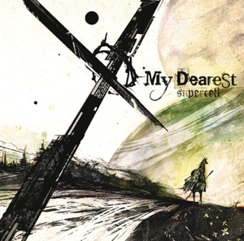
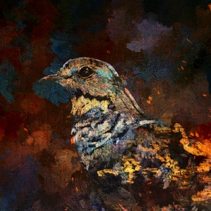
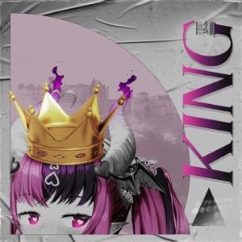
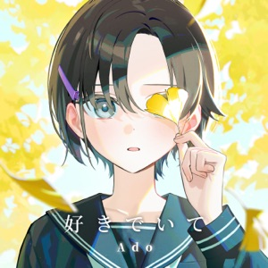
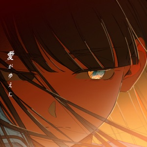
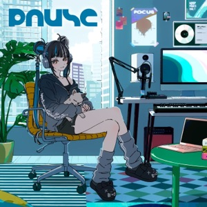
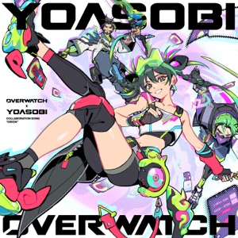
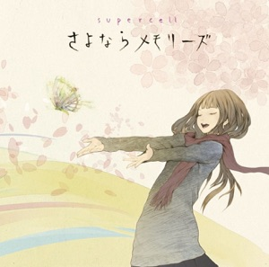
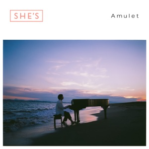

PLAN · MILESTONE 6
Ten features, mocked up
Each feature with a mockup in the app's own style, where its data comes from, its size, and whether part of it
belongs on the Now Playing page. The last section merges those parts into Stage+, the recommended Option A from the
Now Playing plan grown with them. Covers, names and lyrics are from your library; play
counts, dates, release days and which songs carry which quality mark are illustrative.
1
Listening history and stats
PART MERGES
WhereA "Listening" page in the sidebar, under Library.
DataOur own plays table, written when a song passes half its length. Music.app's totals seed it.
SizeMedium: the log, one page, a bar chart drawn with plain boxes.
Listening page
38 h 12 min · 612 plays · 214 songs · 61 artists
1 Oct — 20 Oct · minutes listened per day
Top artists

supercell
61 plays

Kenshi Yonezu
38 plays
Top songs
3
KING
Ironmouse, shirobeats & Sleeping Forest
Merges: Stage's Plays card gets a small chart of this song's plays per week, and "#1 this month" when it is.
2
New from your artists
PART MERGES
WhereA "New for You" page under Apple Music, with a count in the sidebar.
DataEach library artist's latest-release view, checked once a day, newest first. "Seen" is kept locally.
SizeMedium: ~600 artists, so a daily background sweep with the existing cache.
New for You page
New for You
Releases from the 598 artists in your library
This week · 4 new
NEWDND (feat. Kuromi)
ADO · Single · 17 Oct

NEWSuki de Ite
ADO · Single · 15 Oct
NEWYodaka
Kenshi Yonezu · 14 Oct
NEWWalk on your way
Eir Aoi · 14 Oct
Earlier this month

Aigayueni
Tsukuyomi · 6 Oct
Amore (Special Edition)
ReoNa · EP · 3 Oct

PAUSE
Harusaruhi · 2 Oct
Echoing Laments in the Rain
Mabodofu · 1 Oct
Merges: Stage's "More by ADO" shelf leads with the artist's newest release, marked NEW when you have not played it.
3
Lyrics with romaji and translation
PART MERGES
WhereThe Lyrics panel: Original · Romaji · Both, and Translation when Apple has one.
DataAlready downloaded: the lyrics TTML carries <transliterations> per line key (L1, L2…) and <translations>.
SizeSmall: parse two more blocks, draw a second line.
Lyrics panel · real lines from KING
OriginalRomajiBoth
幽閉 利口 逝く前に
yuuhei rikou iku mae ni
ユーヘイじゃ利口に難儀ダーリン
yuuhei ja rikou ni nangi daarin
幽閉 ストップ 知ってないし
yuuhei sutoppu shitte nai shi
勘弁にしといてなんて惨忍
kanben ni shitoite nante zannin
人様願う欠片のアイロニ
hitosama negau kakera no aironi
Merges: Stage's "line playing now" shows the romaji under it. The TTML also names the songwriters (here, Kanaria), which fills Stage's Credits when Apple's song attributes have no composer.
4
Favourite from anywhere
MERGES
WhereA ♥ by the player bar's title, on a row's hover, and on Now Playing. ⌘L toggles it.
DataMusic.app's favorited, written by the helper, so Favourite Songs updates everywhere.
SizeSmall: one read, one write.
player bar and a song row
soldier gameLOSSLESS♥
ADO · soldier game - Single
Raven Sky
ADO · Raven Sky - Single
My Dearest
supercell · My Dearest
Merges: Stage's Favourite button is this, filled when the song is a favourite.
5
Add to playlist
MERGES
WhereA row's right-click menu, a drag onto a sidebar playlist, and Now Playing's button.
DataApple's POST /v1/me/library/playlists/{id}/tracks; New Playlist uses POST /v1/me/library/playlists.
SizeMedium: a menu, drag and drop, two writes.
right-click menu, and a drag onto the sidebar
Playlists
♫ Acoustic anime
♫ Animenz +1
♫ FROM THE FIRST TAKE
♫ late night study vibe
♫ My Favourites
soldier game
ADO · soldier game - Single

Orion (English Version)
YOASOBI · Orion - Single

Sayonara Memories
supercell · Sayonara Memories - EP
Merges: Stage's Add to Playlist button opens the same playlist menu. The right-click menu is also where Favourite (4) and Start Radio (10) live on rows.
6
Command palette
STAYS GLOBAL
Where⌘K anywhere. Arrow keys, Return, Escape.
DataLibrary lists already loaded, the catalog search, and a list of actions.
SizeMedium: the search field and IME support are already built.
⌘K over any page
🔍adoesc
Library
ADO Artist · 41 songs↵
Raven Sky - Single ADO
soldier game Song · ADO
Apple Music
Suki de Ite - Single ADO · not in library
Actions
⤨ Shuffle ADO
♪ Go to Now Playing ⌘ 0
Stays global: nothing to merge. It is the fastest way to Now Playing, not part of it.
7
Quality everywhere
MERGES
WhereMarks on every row and tile, filter chips on Songs and Albums, a "Hi-Res in My Library" list.
DataaudioTraits: of the 3,284 catalog songs in the saved answers, 3,270 are lossless, 329 hi-res, 369 Atmos.
SizeSmall: the traits are parsed; filters run on loaded lists.
Songs with a quality filter
AllLosslessHi-ResDolby Atmos
Sayonara Memories
supercell · Sayonara Memories - EP

HI-RES ATMOS4:12Orion (English Version)
YOASOBI · Orion - Single
Amore
ReoNa · Amore (Special Edition) - EP
Merges: Stage's quality pills are the large form of these marks, with the sample rate from Music.app added.
8
Smarter shuffle
STAYS IN THE QUEUE
WhereHold or right-click Shuffle for its rules. Up Next says why a song moved.
DataThe play log (1) and Music.app's skip counts.
SizeSmall once the play log exists: the queue port owns the order.
Shuffle's rules, and Up Next
KING
Ironmouse, shirobeats & Sleeping Forest
Sayonara Memories
supercell
3 songs left out: played in the last 6 h. 1 left out: skipped 6 times.
Stays in the queue: it shapes Up Next. Stage's Skips card shows the number it uses.
9
Mini player and menu bar
SHARES THE LOOK
WhereA menu bar item with a dropdown, and a small always-on-top window (⌥⌘M).
DataWhat the player bar has, plus the current lyric line.
SizeMedium to large: a second window and a status item on the same renderer.
desktop
KING
Ironmouse, shirobeats & Sleeping Forest
幽閉 ストップ 知ってないし
⤨ ⏮ ❚❚ ⏭ ♥
KING
yuuhei sutoppu shitte nai shi
⏮ ❚❚ ⏭
Shares the look: the blurred-cover backdrop and lyric line come from Stage; it is its own window.
10
Song radio and sleep timer
RADIO MERGES
WhereStart Radio on Now Playing and in a row's menu. The sleep timer by the volume.
DataThe song's station relationship; the timer pauses through the helper.
SizeSmall each.
Start Radio, and the sleep timer by the volume
Playing from
soldier game Radio
Songs like soldier game, endless
Up Next fills from Apple's station as songs play. Your shuffle rules (8) still apply.
☾ 12:40
Merges: Stage gets a Start Radio button next to Favourite and Add to Playlist. The sleep timer stays in the player bar.
★
Stage+ — Option A with what merges
RECOMMENDED
Favourite (4), Add to Playlist (5) and Start Radio (10) as the actions. Quality pills (7). The live lyric line with romaji (3).
A Plays card with this song's weekly chart and rank (1). Credits with the songwriters from the lyrics (3). The shelf leads with the
artist's newest release (2).
Now Playing · page area · illustrative numbers
Now playing · Single · 2026
soldier game
ADO
soldier game - Single · Lantis
🎧 Lossless ALAC · 48 kHzJapaneseWord-by-word lyrics
♥ Favourite＋ Add to Playlist◉ Start Radio↗ Copy Link
♪ the line being sung right now
and its romaji under it
In library since
3 Feb
2026
Credits
Performed byADO
Composed byMitsuru Wakabayashi
Lyrics byfrom the lyrics' songwriters
Label · releasedLantis · 14 January 2026
Sound
FormatApple Lossless (ALAC)
Sample rate · bit rate48 kHz · 1,411 kbps
Length · BPM3:41 · 172
ISRCJPPO02504487 ⧉
More by ADO
NEWDND (feat. Kuromi)
Single · 17 Oct
NEWSuki de Ite
Single · 15 Oct
Suggested order
| # | Step | Brings | Size |
|---|
| 1 | Helper trackInfo + Stage page | The redesign with Music.app's numbers | Medium |
| 2 | Favourite (4) and quality marks (7) | Stage's ♥ and pills; marks in every list | Small |
| 3 | Romaji and songwriters from the lyrics (3) | Data already downloaded | Small |
| 4 | Play log, then Listening (1) and smarter shuffle (8) | History that Music.app does not keep | Medium |
| 5 | Row menu with Add to Playlist (5) and Start Radio (10) | The actions everywhere | Medium |
| 6 | New for You (2), command palette (6) | Discovery and speed | Medium |
| 7 | Mini player and menu bar (9), sleep timer (10) | Away from the main window | Medium–large |